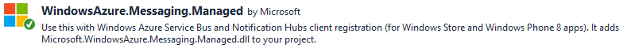
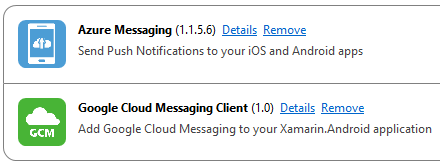

[UWP] Windows Store Association
-
Create the app and associate it with the Store
- the Windows Store app creation can be on https://developer.microsoft.com or in Visual Studio
- the association with the UWP app and the Store app is done in Visual Studio
-
Retrieve the App Secret and Package SID for the app
[UWP] Notification Hub configuration
- Navigate to the notification nub in the Azure portal
- Click the top option to Manage in full Azure
- In the Azure manager select CONFIGURE
- Add the Window Store app's App Secret and Package SID to the Windows configuration
[UWP] Client Code

using Windows.Networking.PushNotifications;
[UWP] Client Code
PushNotificationChannel channel =
await PushNotificationChannelManager
.CreatePushNotificationChannelForApplicationAsync();
NotificationHub hub =
new NotificationHub("hub-name", "listen-connection-string");
Registration registration = await hub.RegisterNativeAsync(channel.Uri);
if (registration.RegistrationId != null)
channel.PushNotificationReceived +=
Channel_PushNotificationReceived;
[UWP] Notification Received Event Handler
private async void Channel_PushNotificationReceived(
PushNotificationChannel sender,
PushNotificationReceivedEventArgs args)
{
if (args.NotificationType == PushNotificationType.Raw)
{
// do something with args.RawNotification.Content
}
}
Android with Xamarin
What and Why?
- Xamarin.Android makes possible to develop Android apps with C#
- Write Android apps with Visual Studio or Xamarin Studio
- It's free
- Ability to share code with Xamarin.iOS and UWP
- Azure Notification Hubs push notifications possible
[Xamarin.Android] Google Cloud Messaging
- Go to the Google API Console
- Create a new project (take note of the project number)
- Enable Google Cloud Messaging in the Mobile APIs section
- Create a credential with type API key designated for a server
- Navigate to the Azure portal under the DEBUG section for the Notification Hub to add this API key there
[Xamarin.Android] Dependencies
Add the following components to your Xamarin.Android project

using Gcm.Client;
using WindowsAzure.Messaging;
[Xamarin.Android] Initialize Notifications
GcmClient.CheckDevice(this);
GcmClient.CheckManifest(this);
GcmClient.Register(this, "google-project-number");
[Xamarin.Android] Push Notification Overview
- Service class with a base class of
GcmServiceBase
- Has
ServiceAttribute on the class
- This handles
OnMessage(), OnRegistered(), OnUnRegistered, and OnError()
- Receiver class that has a base class of
GcmBroadcastReceiverBase<GcmServiceClass>
- The
GcmServiceClass is the above class that had a base class of GcmServiceBase
More information found in Azure documentation
Testing Push Notifications
- Use the browser Azure management in the section DEBUG
-
Write a test app (C# console app, Node.js, etc.)
- Recommended for long-term testing
- Able to automate this type of testing
Further In Depth Reading
- Registration and installation management Azure Docs
- Send notifications from a console app Azure Docs
- Targeted notifications with tags Azure Docs
- Use templates to make cross-platform payloads easy Azure Docs